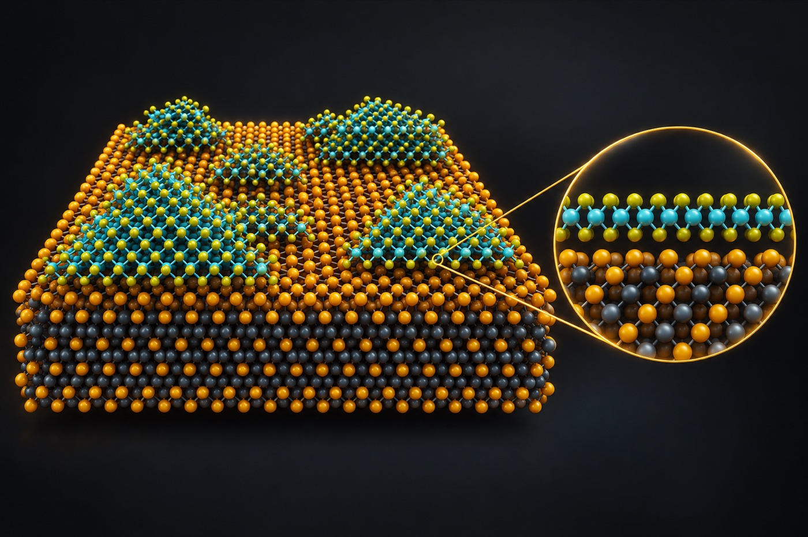
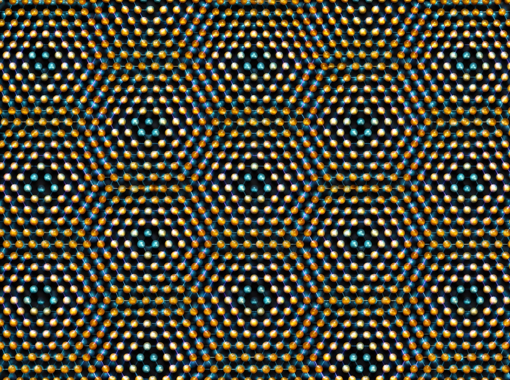
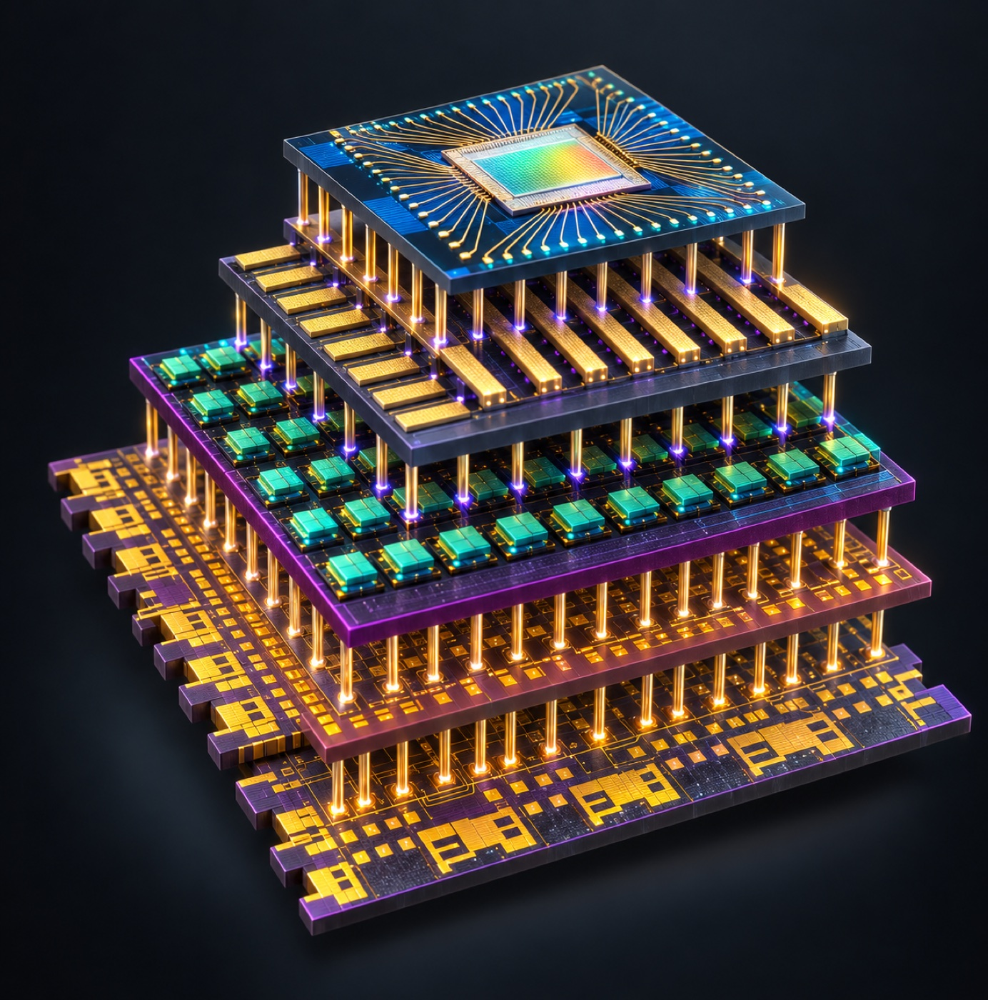
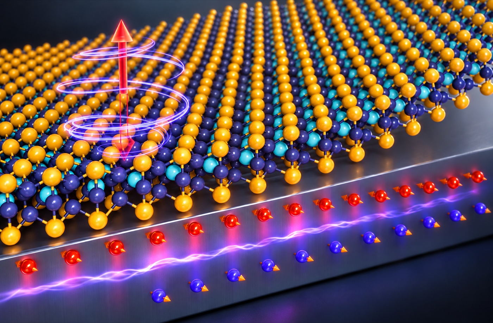

합성
기판 위에서 결정막이 자라고 원자 배열을 이루는 모습

합성 연구 보기 ↗Continuously updated. Interactively explored. Connected by research.

새로 검토하거나 추가한 페이지와 문헌을 확인할 수 있습니다.
층상 2D 결정부터 분자 케이지를 이루는 0D 결정까지, 다양한 구조를 가진 반데르발스 물질의 원자 배열을 비교합니다.
SnS는 서로 다른 Sn·S 원자종을 표시합니다. 안티모니 옥사이드는 Sb₄O₆ 단위 모티프가 반복되는 결정면을 위에서 본 모습입니다.
합성부터 모아레 구조, 차세대 집적 소자와 강자성·강유전 특성까지 대표 연구 아이디어를 모식도로 살펴보세요.
기판 위에서 결정막이 자라고 원자 배열을 이루는 모습

합성 연구 보기 ↗두 원자층의 상대적인 회전과 겹침으로 나타나는 모아레 무늬
센서, 메모리, 2D logic, 실리콘 회로를 수직으로 쌓은 집적 구조

차세대 소자 보기 ↗원자층 격자와 스핀·분극 방향의 표현

소재 발견부터 소자·집적·대면적 성장까지, 서로 다른 연구 흐름의 대표 사례를 발표 시점 순으로 나열했습니다. 한 분야가 다른 분야로 대체됐다는 뜻은 아닙니다.
원자 몇 층 두께의 흑연 막을 분리하고 전기장 효과를 측정한 결과가 발표되며, 원자층 물질을 실험으로 다루는 연구가 본격화됐습니다.
Novoselov et al., Science (2004) ↗단층 MoS₂의 직접 밴드갭 발광과 박막 트랜지스터가 보고되면서, 그래핀을 넘어 밴드갭을 가진 2D 반도체 연구가 빠르게 확장됐습니다.
Mak et al., Physical Review Letters (2010) ↗ Radisavljevic et al., Nature Nanotechnology (2011) ↗이중층 MoS₂ 위에 인버터, NAND, SRAM, 링 발진기를 구현해 2D 반도체가 여러 트랜지스터를 연결한 회로로 확장될 가능성을 보였습니다.
Wang et al., Nano Letters (2012) ↗격자 맞춤의 제약을 줄이며 층별 기능을 조합하는 방식이 정립되어, 소재를 쌓아 설계하는 연구가 열렸습니다.
Geim & Grigorieva, Nature (2013) ↗절연체 SiO₂ 위에 4인치 단층 MoS₂·WS₂를 직접 성장시키고, 웨이퍼 규모 트랜지스터 제작을 시연했습니다. 작은 박리 조각을 넘어 공정 규모를 넓히려는 연구가 본격화됐습니다.
Kang et al., Nature (2015) ↗초박막 CuInP₂S₆의 강유전성과 단층 CrI₃의 강자성이 보고되며, 반데르발스 물질은 전하·빛뿐 아니라 분극과 스핀을 다루는 플랫폼으로 확장됐습니다.
Liu et al., Nature Communications (2016) ↗ Huang et al., Nature (2017) ↗매직 앵글로 비튼 이중층 그래핀에서 초전도가 보고되며, 비틀림각으로 전자 밴드와 상관현상을 설계하는 모아레 연구가 크게 확장됐습니다.
Cao et al., Nature (2018) ↗α-In₂Se₃를 채널로 사용해 분극 상태가 채널 전도도를 바꾸는 강유전체 반도체 전계효과 트랜지스터(FeS-FET)가 보고됐습니다. 강유전체 게이트 절연막을 쓰는 FeFET와 구별되는 소자 개념입니다.
Si et al., Nature Electronics (2019) ↗MoS₂와 WSe₂ 전계효과 트랜지스터를 웨이퍼 규모로 여러 층 쌓아, 서로 다른 회로층을 한 기판 위에 직접 만드는 3차원 집적을 시연했습니다.
Jayachandran et al., Nature (2024) ↗그래핀 template의 나노구멍으로 성장 반응을 아래쪽 기판까지 전달해 4인치 단결정 MoS₂를 만들고, 저온 성장과 monolithic 3D integration 가능성을 보였습니다.
Moon et al., Nature (2025) ↗